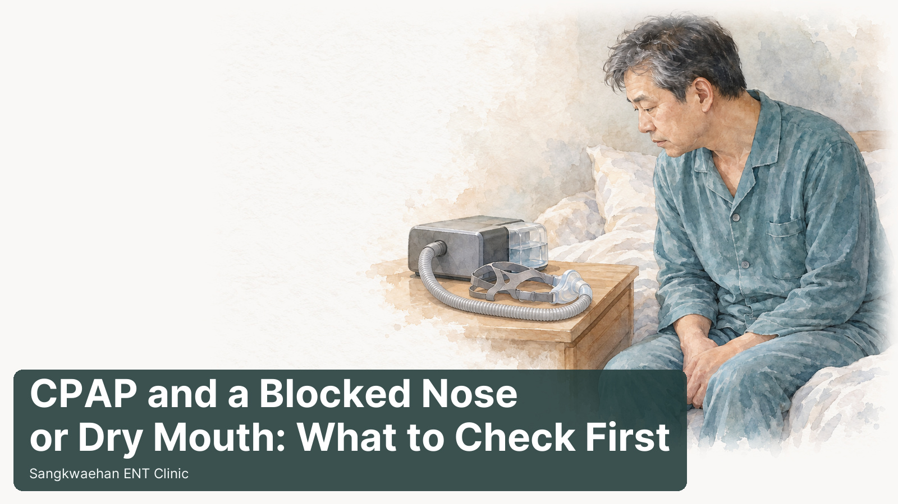
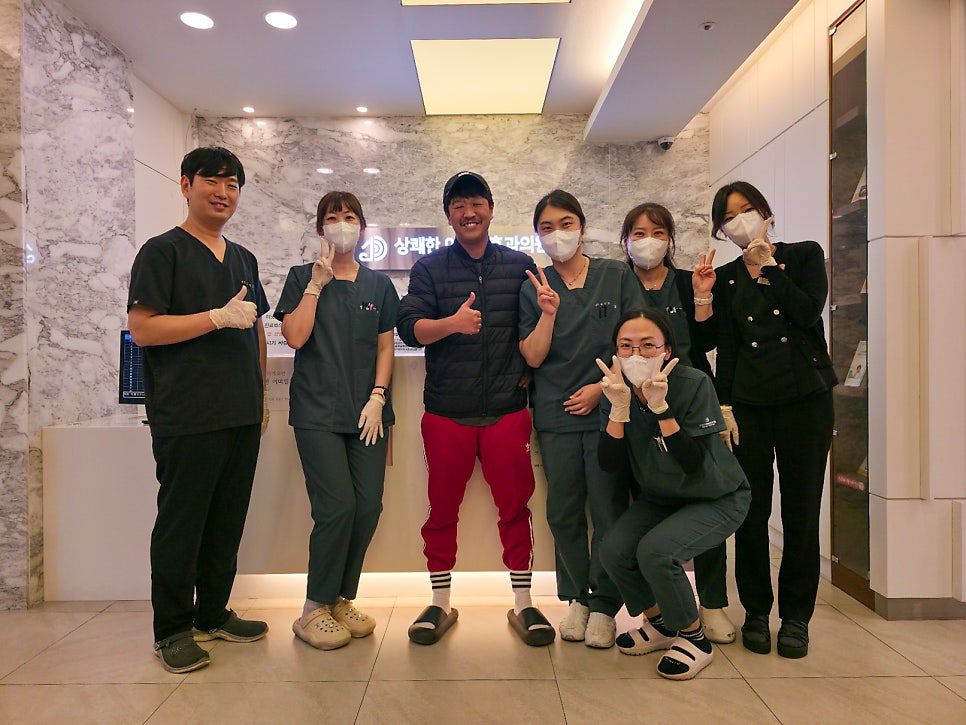
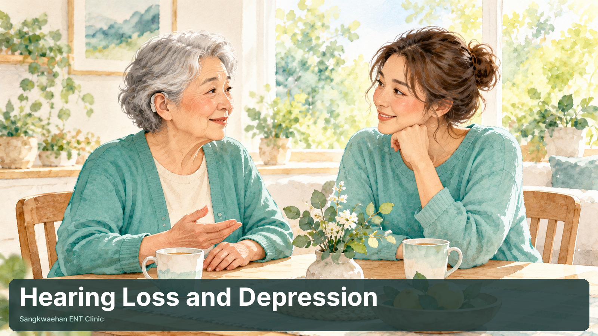
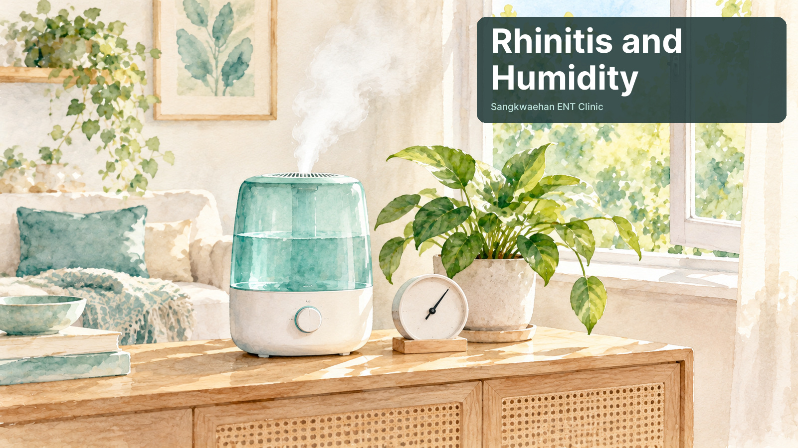
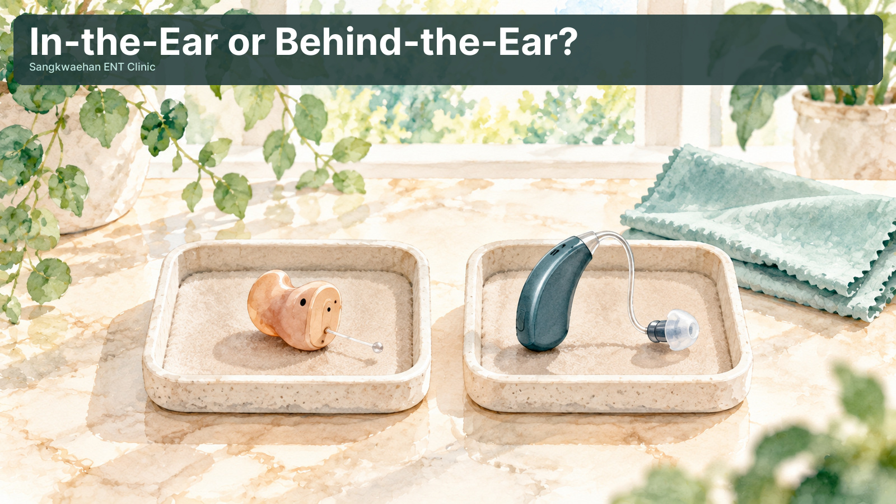

Articles by Dr. OH JUNGHO, ENT specialist at Sangkwaehan ENT Clinic in Jinhae, Changwon. 39 articles. Each post is an English adaptation of an article from our Korean blog, written for international residents of Jinhae, Changwon, Masan and nearby areas.

When a cold turns into sinusitis: the 10-day and 12-week rules, warning signs near the eye, why antibiotics can wait, and what nasal endoscopy shows, with real endoscopy photos.

A stuffy nose or dry mouth is common with CPAP. Mask leaks, humidification, room air, mouth opening and the nose itself, plus sprays and when to see an ENT doctor.
Korea’s 2026–27 national flu vaccination: start dates for children, pregnant women and adults 65+, the two-dose rule for children, COVID-19 co-administration and safety.
Can weight-loss medication treat obstructive sleep apnea, and can you stop CPAP after losing weight? An ENT specialist in Changwon reviews the evidence.

Steroid, combination and decongestant nasal sprays work differently. An ENT specialist in Jinhae, Changwon explains when each is used and how to use them.
Tinnitus distress depends on how the brain reacts to sound. An ENT specialist in Jinhae, Changwon explains tinnitus CBT, a 6-step home routine and red flags.

Why a rapid flu test can be negative in the first hours of fever, how a molecular test differs, and when each makes sense — from an ENT in Jinhae, Changwon.

Do you need hearing aids for mild or moderate hearing loss? An ENT specialist in Jinhae, Changwon sums up the 2026 Cochrane review: benefits, limits, fitting.
What happens after stopping GLP-1–based weight-loss medication? Trial evidence on weight regain, maintenance and habits, plus why sleep apnea needs re-checking.

A plain-English guide to your sleep study (PSG) report — AHI, RDI, lowest oxygen, ODI, T90, sleep stages and arousals — from an ENT in Changwon, Korea.

Typical deep, light and REM sleep proportions, how far to trust smartwatch sleep data, and a real comparison with a sleep study — from an ENT doctor in Korea.

How CPAP works, CPAP vs APAP vs BiPAP, pressure titration, National Health Insurance rental, co-payments and the 90-day adherence rule, explained by an ENT.

Who needs a sleep study, what polysomnography measures, what happens on the night and how AHI guides treatment — from an English-speaking ENT clinic in Jinhae.

Years in a shipyard or factory and now hard of hearing? An ENT explains noise-induced hearing loss and Korea's workers' compensation hearing test criteria.

How simple snoring differs from obstructive sleep apnea, warning signs that mean you should get checked, and how a sleep study confirms it, from an ENT.

Can you treat BPPV (positional vertigo) at home with Brandt-Daroff exercises? An ENT explains when they help, how to do them and when to see a doctor first.
A patient guide to weekly GLP-1-based weight-loss injections: how they work, injection tips, side effects, gallstone and pancreatitis risk, tests and diet.

Spinning dizziness after a fall can be BPPV, when loose ear crystals move into a balance canal. An ENT explains the link with falls and how repositioning works.

Antihistamines are known to make you drowsy, yet some people sleep worse on them. An ENT explains sleep fragmentation and practical fixes for allergy sufferers.

One-sided headache with a blocked nose that painkillers barely touch? An ENT explains contact point headache from a deviated septum and its treatment.
Paper review: a 2022 randomized trial compared mastoid-vibration repositioning (CuRM) with a new manoeuvre for horizontal canal cupulolithiasis.

Hearing aids do more than make sounds louder. An ENT explains four ways they may ease tinnitus, what the 2024 VA/DoD guideline suggests and who should consider them.

How hearing disability assessment works in Korea: prior test records, three visits with pure-tone, speech and ABR tests, the two severity levels and next steps.
How house dust mite sublingual immunotherapy (SLIT) tablets work, who can use them, how they are taken, common side effects and how long treatment lasts.
Why are some hearing aids returned within 3 months? An ENT summarises a Korean study on return rates, the main reasons by age group and the style returned most.
Can the COVID-19 and flu vaccines be given at the same time? What studies and the US CDC say about safety, effectiveness and who should check with a doctor.
Why rapid antigen flu tests can miss early flu, how a rapid molecular test works, how its accuracy compares and why early diagnosis helps antiviral treatment.

Hearing loss can lead to isolation, family friction and low mood in older adults. An ENT explains the link with depression and how hearing aids may help.

How dry and humid air each affect rhinitis, the indoor humidity range to aim for, and seasonal tips with humidifiers, ventilation, saline rinses and fluids.
Ménière's disease explained by an ENT specialist: low-pitched hearing loss, spinning vertigo, tinnitus and ear fullness, likely causes, treatment and salt tips.

RIC hearing aids explained: open and closed fittings, the occlusion effect, feedback control, and model-dependent streaming and rechargeable options.
A lump in the neck is often a swollen lymph node from a cold, but some lumps need more tests. An ENT explains when neck ultrasound and needle biopsy are used.
BPPV can recur after successful treatment. Learn about follow-up, associated conditions, low vitamin D levels and approaches to reducing recurrence.
Finasteride for male-pattern hair loss: treatment considerations, sexual and mood-related side effects, and precautions for handling broken or crushed tablets during pregnancy.
Repeated vertigo, tinnitus, ear fullness and hearing loss: how Ménière's disease differs from short-term dizziness, how it is diagnosed and why diet matters.
One-sided hearing loss, tinnitus or dizziness can rarely come from a tumour on the hearing nerve. An ENT explains what ABR can show and why MRI is the key test.
Ear pain with a normal-looking ear may come from the jaw, teeth, throat, sinuses or neck. An ENT explains referred otalgia, its causes and the red flags.
Phlegm for weeks, mucus running down the throat, a sticky throat or a lump feeling? How nasal endoscopy and CT can find postnasal drip and hidden sinusitis.
A blocked ear with muffled hearing but no pain may be fluid behind the eardrum. An ENT explains otitis media with effusion, its diagnosis and ventilation tubes.
Sangkwaehan ENT Clinic in Jinhae, Changwon offers ENT consultations in English.